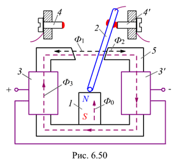

6.6.2.3. Поляризованное реле
К электромагнитным реле с поворотным якорем относится также поляризованное реле (рис. 6.50), состоящее из постоянного магнита 1, якоря 2, катушек 3 и 3', неподвижных контактов 4 и 4' и магнитопровода 5. Это реле отличается от обычного ЭМР постоянного тока тем, что вместо ярма здесь установлен постоянный магнит N - S, наличие которого повышает чувствительность реле и, кроме того, заставляет реагировать реле на полярность приложенного к его катушкам напряжения.
Магнитный поток Ф0 постоянного магнита N - S, проходя по якорю 2, делится на два потока Ф1 и Ф2. Проходя через плечи ярма, один из этих потоков складывается с основным магнитным потоком Ф3, создаваемым в ярме намагничивающим током катушек, другой направлен ему навстречу. В том плече ярма, где потоки складываются, сила притяжения, действующая на якорь, больше, и якорь притягивается к этому плечу. При изменении полярности приложенного к катушкам напряжения якорь притягивается к другому плечу ярма.
Если напряжение на катушках равно нулю, то якорь идеализированного реле займёт нейтральное (среднее) положение, т. к. магнитные потоки Ф1 и Ф2 равны между собой и направлены встречно. Однако практически якорь всегда притянут к одной из сторон ярма, т. к. всегда имеется небольшое смещение якоря. Магнитодвижущая сила, обеспечивающая срабатывание реле, определяется по формуле

т. е. МДС срабатывания пропорциональна магнитному потоку Ф0 постоянного магнита и смещению якоря х, когда он притянут к ярму.
Номинальный ток, длительно пропускаемый через контакты поляризованных реле РП-4, РП-5 и РП-7, выпускаемых отечественной промышленностью, 0,2 А, время срабатывания 2,5…13 мс.
Электромагнитное реле переменного тока состоит из таких же деталей, что и реле постоянного тока. Для устранения вибрации якоря, связанной с изменением силы притяжения, реле изготавливают либо с двумя катушками, либо с дополнительной короткозамкнутой обмоткой, насаженной на одну из половин раздвоенного полюса.